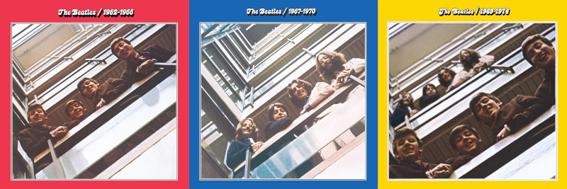

$ BaronBurdock
2022 08 29: The Beatles Yellow Album
Just about every Beatles fan out there has attempted to come up with their own post-Beatles mix. For the uninitiated, I would highly recommend looking into Ethan Hawke’s Black Album compilation which was featured in the movie Boyhood – It’s excellent. At any rate, I attempted to come up with my own post-Beatles compilation, but with the Red and Blue Albums as my inspiration. My parents introduced me to the Beatles through these two compilations and they are special to me. A “Yellow Album” was the logical starting point for a post-Beatles greatest hits.
The Red and Blue Albums
So what’s the story behind these two albums? In 1972 a company called Audiotape Inc. flagrantly disregarded copyright laws (insert clapping sounds) and sold a bootleg four-LP set of well-known Beatles and solo Beatles songs. Titled “Alpha Omega”, the set featured songs that were arranged in a semi-alphabetical manner without any rhyme or reason why they were selected. The production quality was notably poor and many tracks were haphazardly edited, but it did prove that there was an appetite for a large Beatles compilation. Apple and EMI/Capitol Records’ response to the bootleg collection was predictable: they sued the hell out of everyone involved and released their own compilations in 1973.
Titled “1962–1966” and “1967–1970”, the two greatest hits albums are easily recognizable by their red and blue colored borders (which is why they are commonly called the Red and Blue Albums). The center of the album cover pictures of the Beatles looking down over the stairwell at the EMI building. The Red Album’s image is stolen from the band's 1963 album “Please Please Me”, and the Blue Album’s image was taken from an unused cover for "Let It Be", when the band recreated the same shot in 1969. The two covers signify that both albums span the Beatles’ entire career. Unlike "Alpha Omega", the tracks are chronologically ordered and collectively, 50 songs are featured. The Red and Blue albums are not perfect. Any Beatles nerd out there is liable to go nuts about the following shortcomings:
- The Red Album is short, running about half the length of the Blue Album
- The Red Album is missing the “I Saw Her Standing There” for no apparent reason
- The Red Album over-represents Rubber Soul and under-represents Revolver
- The Red Album lacks any Harrison tracks
- The Blue Album omits some important songs from the White Album
- The Blue Album has some weird inclusions like "Old Brown Shoe"
These common complaints aside, for the most part, both albums capture the bands greatest hits at a time when the “definitive tracks” of their catalog were still being established.
The Yellow Album Rationale
When coming up with my Yellow Album selections, I tried to work within the same constraints that were present with the Red and Blue Albums, notably the run time for each disc. In 1973 albums were pressed onto LP's which had an average run time of 22 minutes on each side. In some cases, the sound engineers were able to push things to about 40 minutes per side, but this came with a perceptible loss in quality. Once you pass the 22 minute mark on an LP, the bass suffers which is a real problem for rock music. Each side on the Blue album runs about 24 minutes, with side two running an impressive 26:47. Following the Blue Album’s lead, I have tried to keep everything under 25 minutes (the closer to 22 minutes the better).
Reportedly, the Beatles’ (notorious) manager Peter Kline came up with the track listing for Red and Blue. He allegedly chose only original compositions to avoid paying royalties, which meant tracks like "Twist and Shout" or "Long Tall Sally" did not appear. This is going to affect Ringo on my Yellow Album, as “You’re Sixteen” and “Only You” should have made appearances but were covers. Ringo had a lot of covers. In the event that I ever come up with a Green Album, its really going to make things difficult having to pull out “Stand By Me” and “Got My Mind Set on You.”
“Happy Xmas (War is Over)” is also missing despite being one of Lennon’s greatest hits. One can argue that Happy Xmas is both a Christmas song and a protest song, but I tend to only hear it at holidays. I don’t know many greatest hits albums that include Christmas songs as it breaks the flow for everything else (even if Lennon’s previous compilations included it). I pulled it. For that reason you won’t be seeing “Wonderful Christmastime” on my Green Album – and we can all rejoice at that.
Beyond these constraints, I also took some other liberties. Harrison’s "Dark Horse" would have probably made the cut if I was purely looking at the charts, but due to his laryngitis it's almost unlistenable. "Dark Horse" is not featured on his most recent greatest hits album so I don’t feel bad scrapping it. Conversely, Lennon’s "Mind Games" didn’t chart that high at the time but gets regular play on classic rock stations so I included it. Admittedly, I’m a fairly lenient when it comes to chronologically ordering the tracks. To come up with my listing, I pulled both the UK release dates and the US release dates for each single. My listing uses both sets of dates when it is convenient. My Yellow Album compilations features tracks from 1969 to 1974, or a five year span. This is in line with the Red and Blue Albums, but in the event that I make a Green Album the time span will need to be much longer - possibly going up to 1984 or 1985.
Without belaboring these considerations any longer, here is my track listing:
The Yellow Album:
Side One
- Give Peace A Chance
- Instant Karma
- Maybe I’m Amazed
- My Sweet Lord
- What is Life
- Another Day
Side Two
- Power To The People
- It Don’t Come Easy
- Uncle Albert/Admiral Halsey
- Imagine
- Hi Hi Hi
- Back Off Boogaloo
- My Love
Side Three
- Give Me Love (Give Me Peace On Earth)
- Live And Let Die
- Photograph
- Mind Games
- Helen Wheels
- Jet
Side Four
- Band On The Run
- Whatever Gets You Thru the Night
- Oh My My
- Junior’s Farm
- #9 Dream
In then end, I am left with 24 tracks spanning six years. The bulk of the tracks come from McCartney which is to be expected. Ringo’s contributions are better than anything he contributed on Red or Blue. I wish I could have included more from Lennon and Harrison – I could have included just about every track on John Lennon/Plastic Ono Band and All Things Must Pass. In the end though, I think its a solid listing of tracks that could have made up a Yellow Album if the Beatles had stayed together. Load up these tracks after the Blue Album and pretend that they never broke up.